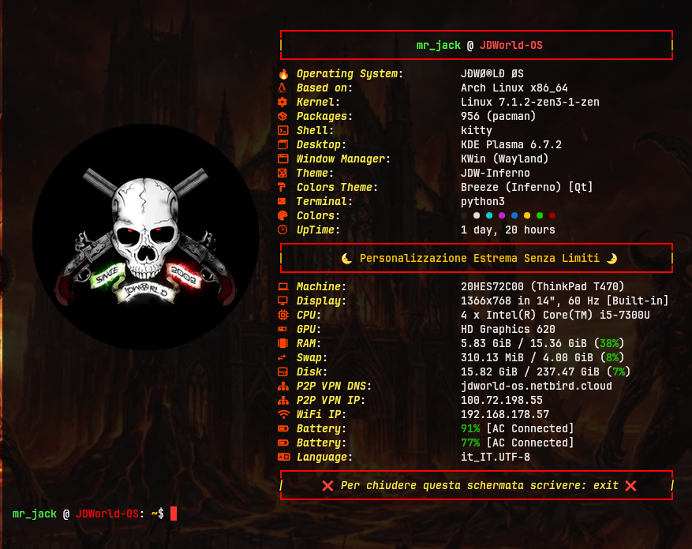

JDWorld OS (Based on Arch Linux KDE)
Questa è la storia di come ho piallato il sistema, bandito l’AUR e creato il formato nativo .jdw per il progetto JDWorld OS.
La Rinascita Atomica
Volevo crearmi un OS personalizzato basato su GNU/Linux, ma non sapevo come rimasterizzare una ISO da zero. Poi è accaduto l’olocausto dell’AUR. Proprio mentre stavo imparando a creare pacchetti con makepkg da caricare sui repository della community, la cronaca ha cambiato totalmente la mia rotta!
Così, con l’aiuto di Google AI, ho reinventato un gestore di pacchetti con formato proprietario .jdw dedicato a JDWorld OS. Il mio nuovo Package Manager può essere integrato in qualsiasi distribuzione Arch Linux (preferibilmente con ambiente desktop KDE).
Se vuoi provare JDWorld OS così come l’ho concepito, non serve scaricare una ISO personalizzata per lanciarla in live o installarla. Ti basta installare Arch Linux pulito con il gruppo plasma-meta (la via di mezzo perfetta tra l’installazione minimale e quella full di KDE), adottare il JDWorld OS Package Manager e installare la mia configurazione nativa (sfondi horror, effetti audio, schemi colore, icone e menù dedicati).
Se proprio vuoi strafare e avere la mia esatta base di partenza (il procedimento completo è nella mia testa), puoi slegare i pacchetti dal plasma-meta ed eliminare il bloatware. Via Discover, Flatpak, Oxygen ed Air: in JDWorld OS il software spazzatura è totalmente assente.
JDWorld OS System Tray Menù
Il cuore dell’interfaccia utente di JDWorld OS è gestito da un menù avanzato, multilivello e dinamico, sviluppato in Python 3 utilizzando le librerie grafiche native PyQt6 (QWidgets).
A differenza dei menù tradizionali che richiedono un riavvio o una ricompilazione del codice per essere aggiornati, questo modulo è stato progettato con una logica Hot-Reload (aggiornamento in tempo reale) basata su semplici file di testo (.txt).
Tutto è nato da qui: dal voler un menù nel vassoio di sistema (ispirato a come gestisco Windows tramite software open-source e PortableApps) dove poter inserire a mio piacimento i collegamenti delle applicazioni che uso di più.
Il JDWorld System Tray Menù si è poi evoluto in un intero sistema operativo, completo di Gestore di Pacchetti e formato proprietario dedicato .jdw. Senza di esso non ci sarebbe stato alcun JDWorld OS, nessun Package Manager e nessun formato nativo. All’inizio il sistema leggeva da un unico file di testo grezzo contenente categorie e voci. Era elementare ma funzionale: faceva il suo dovere ed evitava di farmi scrivere comandi chilometrici nel terminale. Poi, studiando e smanettando, si è evoluto in quello che è adesso.
L’Apocalisse dell’AUR e la Reazione della Ragione
Dopo l’attacco alla supply chain che ha colpito l’AUR tra il 12 e il 16 giugno 2026, ho preso l’unica decisione sensata, logica e responsabile: fare tabula rasa. Ho piallato ogni computer della rete, cambiato ogni singola password e ridotto l’architettura all’osso.
Il Formato Nativo .jdw
Invece di piangere sulle ceneri di makepkg, ho dato vita a un’architettura di packaging proprietaria e modulare. Ogni estensione del mio menù in PyQt6, o pacchetto dedicato al progetto, viene compresso in un file .jdw che include:
install.sh– Gestione lineare dell’installazione (permessi e copia dei file).remove.sh– Rimozione atomica senza lasciare residui nel sistema.jdw-package.info– La scheda tecnica dei metadati in stile Arch Web.
Il Package Manager (jdwos-packages-manager)
La struttura del Package Manager è ridotta ai minimi termini:
jdwos-packages-manager/
├── jdw-install <-- L'installatore nativo
├── jdw-remove <-- Il disinstallatore nativo
├── jdw-info <-- Il visualizzatore di schede tecniche
└── jdw-list <-- L'elenco dei pacchetti a bordo
Guida ai Comandi Core
📦 Installazione
Per installare un pacchetto nel terminale, digita:
sudo jdw-install nome-pacchetto.jdw
jdw-install (L’Installatore Ibrido): Se rileva il pacchetto in locale procede all’istante. In caso contrario, vola su GitHub, lo scarica direttamente in RAM (/tmp/), evade le dipendenze sfruttando i repository ufficiali di Arch, lo estrae, lo configura e pulisce la memoria temporanea.
🗑️ Disinstallazione
Per rimuovere un pacchetto, digita:
sudo jdw-remove nome-pacchetto
jdw-remove (Il Disinstallatore Universale): Sfrutta gli script remove.sh atomici dedicati a ogni pacchetto. Elimina i file di sistema, pulisce le configurazioni nella cartella Home dell’utente reale (${SUDO_USER}) e cancella le tracce dal database locale, lasciando il sistema immacolato.
🔍 Ispezione Metadati
Per visualizzare la scheda tecnica, digita:
sudo jdw-info nome-pacchetto
jdw-info (Il Visualizzatore Cloud): Mostra le specifiche tecniche dei pacchetti formattandole in una tabella stile Arch Web. Funziona istantaneamente sia per i file locali che per quelli residenti online sul Cloud di GitHub.
📊 Elenco Pacchetti
Per vedere la lista dei pacchetti installati, digita:
sudo jdw-list
jdw-list: Elenca istantaneamente tutti i pacchetti .jdw attivi sul sistema.
Niente database pesanti, niente rallentamenti, niente compilazioni infinite e nessun repository di terze parti da aggiungere (la logica è integrata nel core). Tutto ciò che serve come dipendenza viene prelevato direttamente dai repository ufficiali stabili di Arch Linux.
Lo Stato Attuale del Sistema
Oggi il mio sistema principale gira su Arch Linux puro con:
- 956 pacchetti totali (0 Bloatware)
- 0 pacchetti AUR (Vade Retro!)
- 0 Flatpak, Snap o AppImage
Anteprima

JDWorld OS Console Terminal - Registro di bordo del 11 Luglio 2026